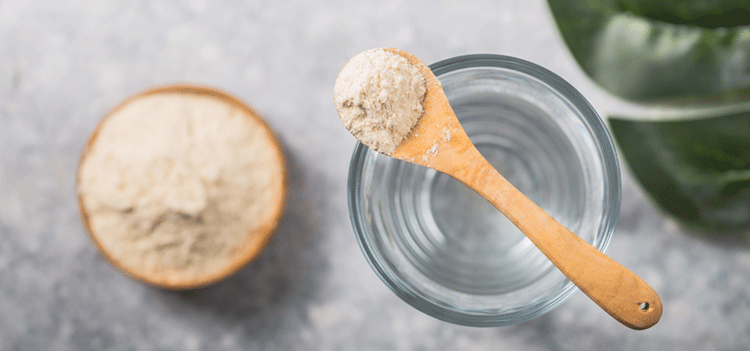
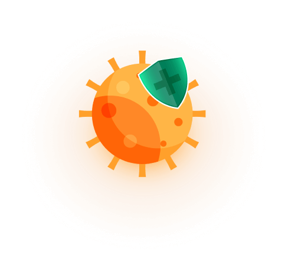
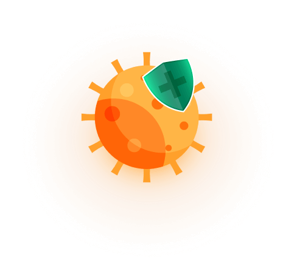

Aumente a sua Imunidade com Immuno Up - é fácil
Pó com sabor cítrico!
- Proteção contra vírus, bactérias, alergénicos
- Reforço da imunidade
- Resistência a doenças infeciosas
Immuno Up! Fortalece a sua saúde
O reforço da imunidade é a melhor prevenção de doenças virais e infeciosas. As pessoas com imunidade reduzida adoecem 4-5 vezes mais frequentemente do que as que tomam medicamentos profiláticos. Além disso, em 92% dos casos, desenvolvem-se complicações graves. De acordo com os resultados de numerosos estudos realizados por grandes centros de investigação, Immuno Up é reconhecido como o melhor produto para reforçar a imunidade. A fórmula enriquecida aumenta o número de células do sistema imunitário, tais como fagócitos, macrófagos, linfócitos T e B, aumentando a resistência do corpo a todos os vírus e infeções.
Encomendar agoraImmuno Up! Benefícios
Previne doenças virais
Reforça a imunidade
Previne reinfeções
Reforça a sua resistência aos alergénicos.
Immuno Up! A melhor defesa para o seu sistema imunitário
Os atuais imunoestimulantes têm uma eficácia limitada e não podem proteger contra infeções. Realizámos ensaios clínicos em 76 países e comparámos os efeitos das drogas populares e do Immuno Up de formas diferentes. Em comparação com os imunoestimulantes e várias ervas medicinais, Immuno Up mostrou os seguintes resultados:
- - 96% de redução na incidência de infeções virais
- 91% menos complicações após a doença
- Concentração de células imunitárias melhorada - 87%
- Diminuição da gravidade e frequência das reações alérgicas - 84%.
Immuno Up! Fórmula reforçada para um sistema imunitário forte
-
Vitamina A
Antioxidante poderoso que apoia o desenvolvimento de novas células imunitárias, aumenta a resistência do organismo a infeções virais e bacterianas.
-
Vitamina E
Um poderoso antioxidante que protege as estruturas celulares de danos, estimula a síntese de imunoglobulinas e fatores de defesa não específicos.
-
Vitamina C
Aumenta a incisividade das células imunitárias, estimula a produção de novos macrófagos, linfócitos T e B, e aumenta a imunidade.
-
Vitamina D
aumenta a imunidade, é essencial para a função tiroideia e a coagulação normal do sangue, - ajuda o corpo a restaurar a defesa, inibe o crescimento de células cancerígenas.
-
Extrato de rosa mosqueta
Melhora a imunidade, ativa os processos metabólicos no corpo, melhora a memória, protege contra vírus, constipações e gripes, alivia as dores de cabeça.
-
Bioflavonoides de citrinos
Reforça os vasos sanguíneos frágeis, impede a passagem de vírus e bactérias, remove metais pesados e toxinas.
Immuno Up! Inovação na imunomodulação
"Mais de 90% da população mundial tem uma imunidade reduzida. Estão especialmente em risco durante infeções sazonais e epidemias virais. De acordo com investigação independente da Associação Europeia de Saúde, os doentes que tomam Immuno Up ficam doentes 4-5 vezes menos do que os doentes que tomam outros imunoestimulantes. A fórmula patenteada aumenta o número de células protetoras no sangue e estimula a produção de células T colaboradores, fagócitos e macrófagos. "
Mário Costas - chefe de clínica, 12 anos de experiência.
Immuno Up! Regime de ingestão
1 vez por dia Dissolver 20 g (2 colheres) de pó em 200 ml de água, tomar de manhã após uma refeição.
2 vezes por dia Dissolver 10 g (1 colher) de pó em 150 ml de água, tomar após a refeição.
 

Immuno Up! Como encomendar?
Apenas alguns passos separam-no de uma imunidade duradoura:
Encomende no nosso website
O nosso gestor telefonar-lhe-á de volta para obter mais detalhes
Entrega entre 2-5 dias, pagamento no ato da receção
Impulsione o seu sistema imunitário com o Immuno Up - é fácil!
Pó com sabor cítrico
- Previne doenças virais
- Aumenta a sua Imunidade
- Previne infeções repetidas
Privacy policy General conditions of sale Legal warning